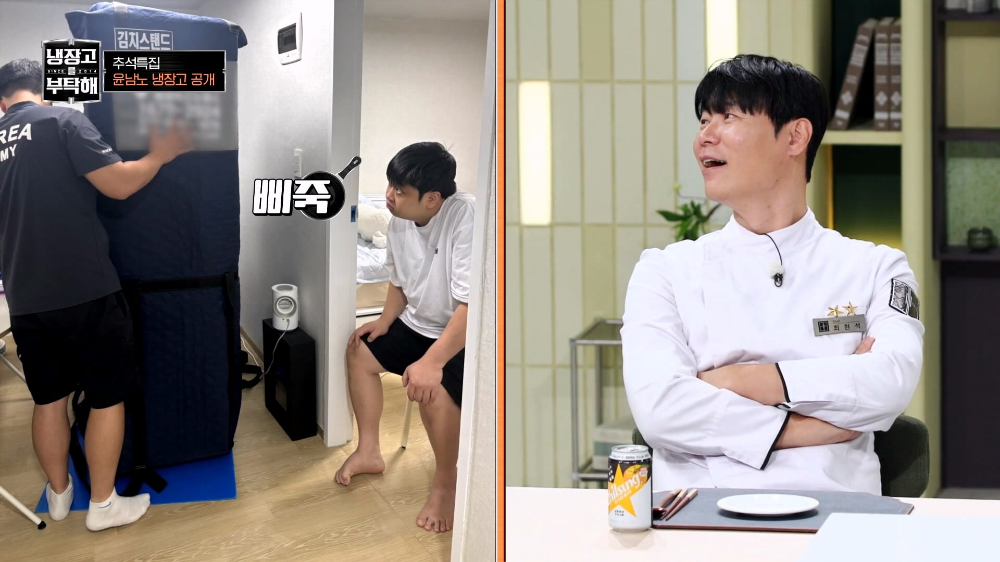
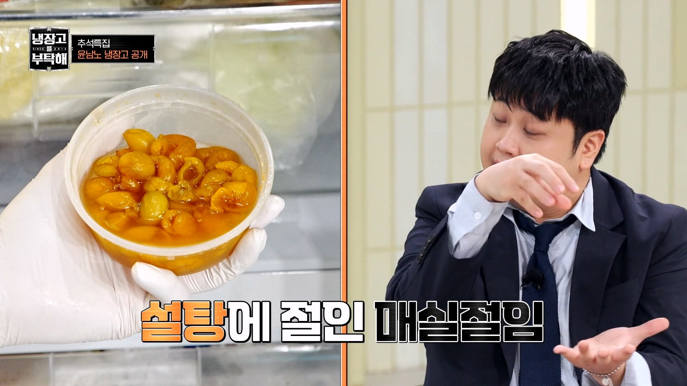
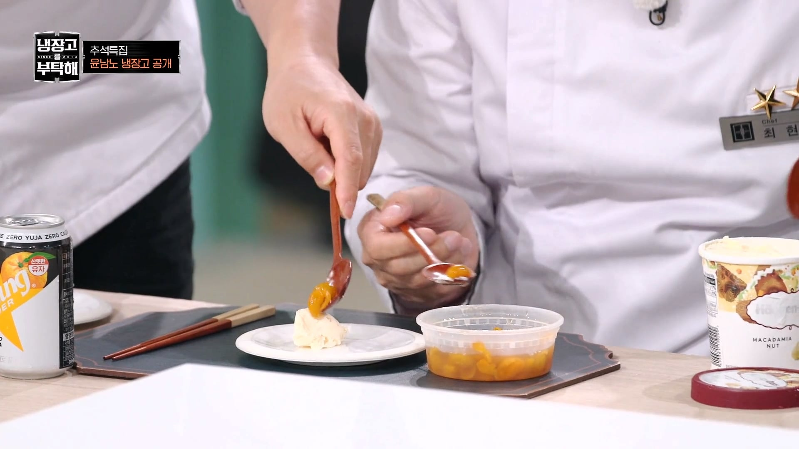
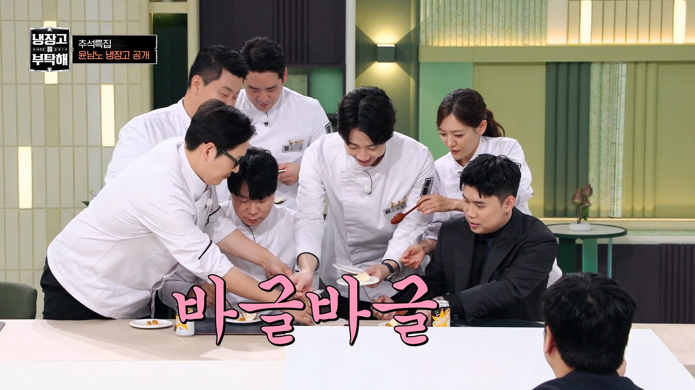
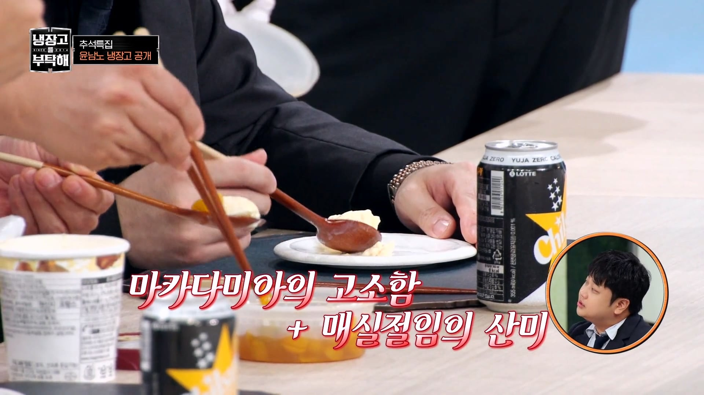
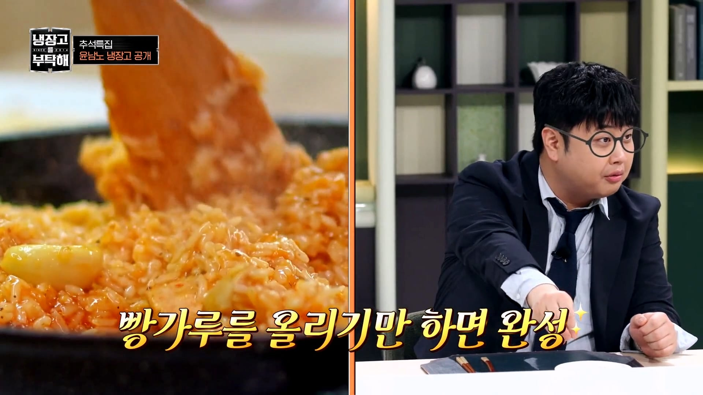
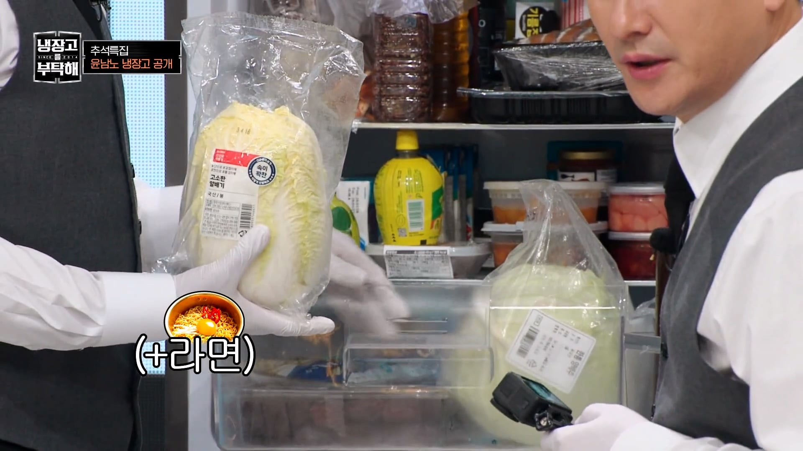
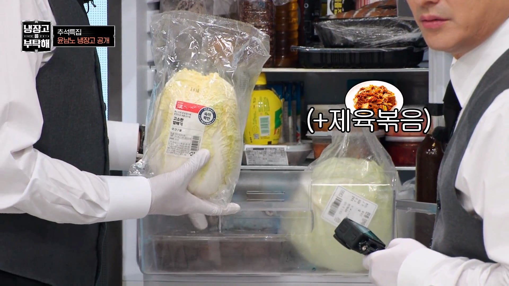
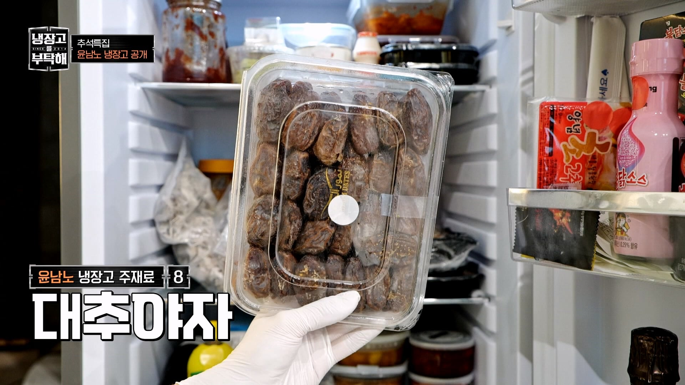

볶음밥 빵가루 바리에이션으로 감자칩도 괜춘함
요리사는 요리사네
식감과 부족맛 보충, 감칠맛 ... 맛잘알이네
냉부 많이 챙겨봤는데 유명한 연예인들 냉장고는 안 가져오는거 같던데
매립형이라 못 가져오는 경우가 많은건가
ㅇㅇ그래서 사진 찍어온 거 보니까 배달 기사분들이 아이스박스에 반찬통 싹 긁어서 담아서 옮기더라
진짜 먹는거에 비하면 뼈밖에 없네
얘는 진짜 요리는 걍 겸사겸사하는거고
먹는게 박사학위전공ㅋㄱㅋ
차가운 우유하고 싸구려 조미김 동시에 먹으면 치즈맛 난다
뭔가 요리에도 고급진 턱시도입고 스타인웨이 피아노 아니면 연주 안하는 피아니스트가 있다면
이분은 손에잡히는걸로 뭐든지 흥을 만들어내는 만능 거리악사 느낌이남 ㅋㅋ
친숙한 재료들인데 어떻게 그 친숙한걸 맛있게 먹을까 고민해본 깊이가 엄청남
먹으려고 요리 배운 사람같네 ㅋㅋ
안경씌우니까 게임캐스터 허준닮았노
재산이다 재산이야
냉장고 가져가니까 심통난거 웃기네 ㅋㅋ
실속맛주머니 맞넼ㅋㅋ